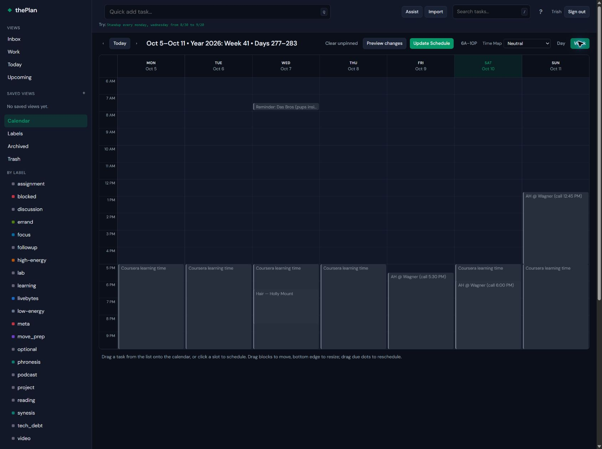
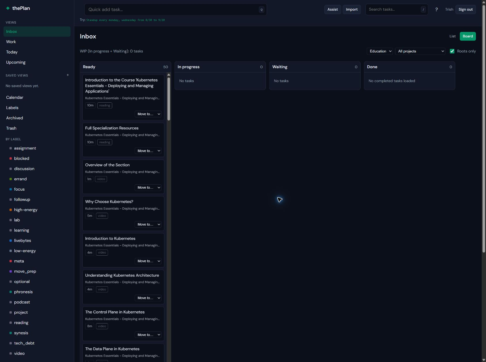
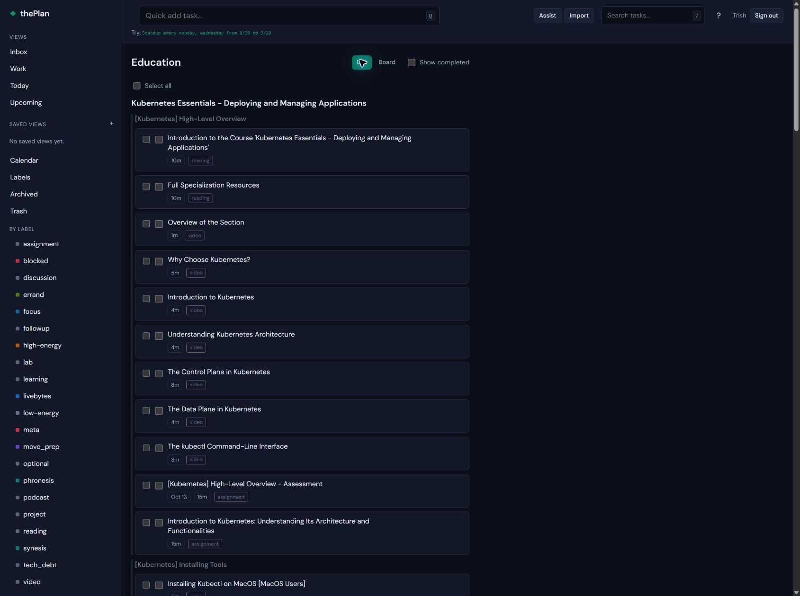
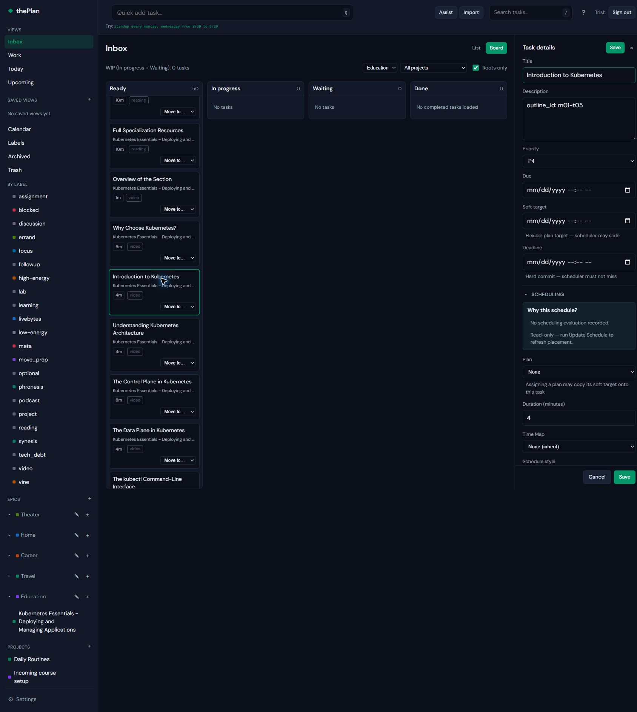
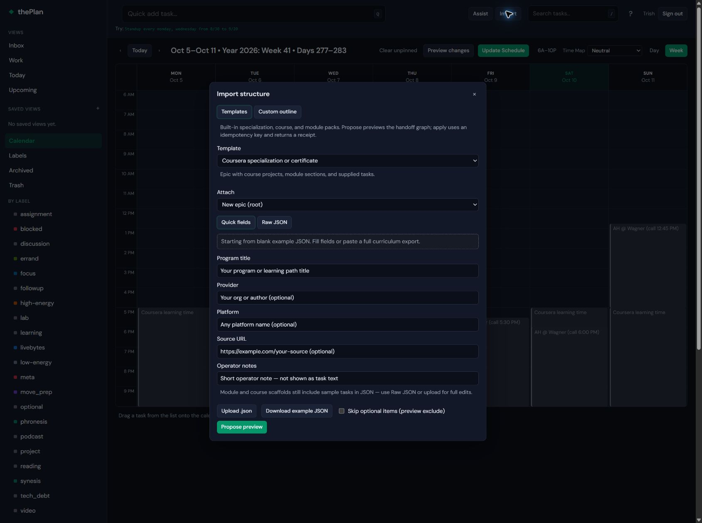
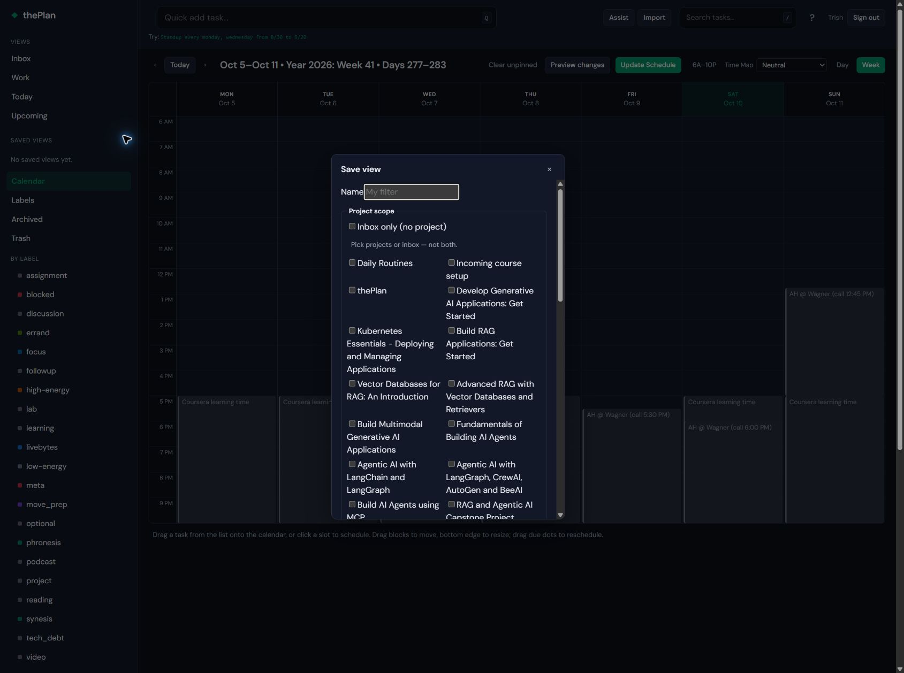

Captured October 10, 2026 from the refreshed live application in Chrome. Six unedited screenshots at the existing browser size. These show current behavior and content, not proposed design decisions. The pack contains actual personal task/calendar content; no app data was edited or submitted for these captures.
Suggested comparison set: calendar, Kanban, list, and task detail. Import and filter builder provide secondary examples of dense forms. Screenshots illustrate layout, hierarchy, spacing, typography, labels and long-title handling. They are not a complete interaction specification.
Real calendar content, toolbar, navigation, and scheduling controls.

Course tasks with long titles and labels. Current tasks are in Ready; other columns are empty.

Education epic, course project, module sections, task durations and labels.

Editable detail panel with scheduling explanation and controls; no values changed.

Templates entry and input controls.

Unsaved filter form, showing control density. No view was created.
